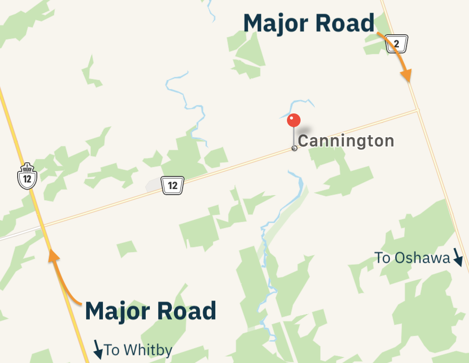
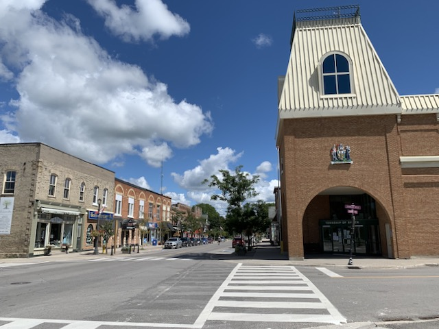

Cannington is now the proud home of an All-Way Stop!
Click ℹ️ (or swipe up ↑ on iOS) for more details, thoughts, and notes.
Cannington is an interesting place as it’s in the middle of nowhere. Bounded on either side by major roads, Cannington was originally a stop on the Toronto-Nipissing Railroad (which we know from Uxbridge). However, now that the railroad’s left, Cannington is oddly positioned near nothing.
This means that when you visit Cannington, you are visiting Cannington, nothing else. As such, there is a surprising amount around Cannington, even if it is rather small.
Downtown Cannington is surrounded by many old, stately homes on quiet, tree-lined streets. They look very nice.
In the downtown, there is not much to see, although it is really nice. Cannington is now home to a four-way stop, an impressive-looking town hall, a pharmacy, a mural, and a delightful café.
Cannington is now the proud home of an All-Way Stop!
A little further afield, Cannington has a humongous park that includes the community centre, old railroad station, horticultural garden, skate park, and many, many fields. It looks like a place that would’ve been epic to play in in elementary school or do the Terry Fox run in.
And that’s Cannington! There’s not much to see, but what is there is very, very good. Cannington is a strange place that feels like it should’ve been forgotten, but gladly hasn’t been.
